Hopscotch JSON Siri Shortcut Help Guide
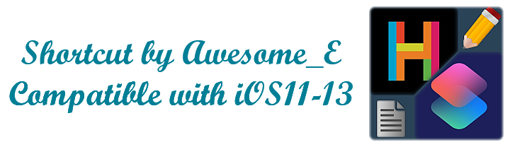About
The Awesome_E Hopscotch JSON Siri Shortcut is the ultimate shortcut for viewing and editing your Hopscotch JSON files. It contains over 900 actions and can mod just about any aspect of your project. It's already come quite a long way, and it will continue to evolve. It all started when I looked into the get file, save file, and Set Dictionary Value blocks. I realized the potential for the Hopscotch Shortcuts combo. Now, I've even come as far as transferring code. It's quite amazing and I really suggest you try it if you have not already!
I looked into the sub-elements of nearly every trait of the "Hopscotch JSON" and realized, "Hey, I could read and write data to this". The shortcut began to advance. From one ability to several, one scene to many, things picked up quickly. And here we are now, with presets, filter checking, and secret blocks! It's all here. To learn more about what this shortcut can do, see the features dropdown in the navigation. The possibilities are endless. You can edit the player version, any object, any piece of code, and even transfer your favorite actions to another project through a preset file.
If you have any questions about this or have a bug to report, just ask me here. I'm always happy to help.
Download
This shortcut is open-sourced, which means that you are free to use it, tinker with it, and remix it! This shortcut is compatible with iOS 11 Workflow, iOS 12-13 Shortcuts, and iPadOS 13 Shortcuts. iOS 14 is NOT officially supported, though it may still work for some users. If you want to try it on iOS 14, however, the download instructions are the same as iOS 13.
| iOS Version | 10.x- | 11.x |
| Compatibility | None | Full |
| 12.x | 13.x | 14.x+ |
| Full | Limited | Unstable |
iOS 13, iPadOS 13 Download Instructions
Compatibility: Limited
- If you have not used shortcuts at all before, create a shortcut and add a random action. Save the shortcut, then delete it. This will allow the necessary setting below to show up.
- Go to Settings and scroll down to "Shortcuts". Tap "Shortcuts" and turn on "Allow Untrusted Shortcuts". This will allow you to run my shortcut.
- Now that you have the app and its proper settings, head back here and find the download links.
- Tap the Download Links in order from left to right, and they should all open the Shortcuts App. Order Matters! Tap "Add Untrusted Shortcut" for each one. Congrats, you now have the Hopscotch JSON Shortcut!
- Give the main shortcut a run! You can now mod any Hopscotch project.
The Shortcuts app is installed by default on iOS 13 and iPadOS 13
Note: Download links are different for iOS 13 and iPadOS 13.
iOS 12 Download Instructions
Compatibility: Full, Recommended
- Go to the App Store, and search for "Shortcuts". Tap on "Shortcuts" by Apple. This is the app you need to install if not installed already.
- Tap on "GET", then tap "INSTALL". Enter your AppleID password or ask a parent. Then, allow the app to download.
- Great! Now you have the Shortcuts App. Head back here and find the download section again, as that is where the link can be found.
- Tap the Download Links in order from left to right, and they should all open the Shortcuts App. Order Matters! Tap "Get Shortcut" for each one. Congrats, you now have the Hopscotch JSON Shortcut!
- Give the main shortcut a run! You can now mod any Hopscotch project.
Skip numbers 1 through 3 if you already have the Shortcuts app
iOS 11 Download Instructions
Compatibility: Full Support
- You will need a second device on iOS 12+ for this, but it does not have to be yours. Login to your parent's or your Apple ID on the second device, and go to the App Store.
- Download the Shortcuts app on that device. You do this to put it in the cloud, which is how you can download an older version for iOS 11. You can delete it after if necessary.
- Go back to your iOS 11 device and make sure you are using the same Apple ID. Open the App Store there, and go to your purchases. To do this, tap your profile icon, then tap purchases.
- Find "Shortcuts", and tap the cloud. Apple will give you a dialog box to download an older version. Click "OK". The download should finish and the app should magically morph into Workflow.
- Come back to this page and find the download links. Tap them in order from left to right, and you should be redirected to the Workflow App. Congrats, you now have the Hopscotch JSON Shortcut!
- Give the stand-alone shortcut a run! You can now mod any Hopscotch project.
Skip numbers 1 through 4 if you already have the Workflow App
The stand-alone shortcut is used to run it from the share sheet or on iOS 11. It is used to remove the need for Shortcuts to render all 1400+ actions.
Viewing Projects
This shortcut allows you to view the JSON file of a Hopscotch in several ways. It can be a published project, a draft, or someone else's project.
- URL Input: To get view the JSON code of a published project, go to the share sheet by tapping share and entering your age. If you don't see "Shortcuts", go to more and turn it on. Tap on shortcuts. Find "Hopscotch JSON" and tap it. A popup will appear with all of that project's code.
- View in Safari: This option will be shown when you are prompted with what you want to do with your file. Choosing this option will open a Safari tab containing your project. By doing this, you can find text on the page. To find a certain text on the page, type that text in the URL bar, then tap the result under "on this page".
- Show Popup: This option, like the option above, is shown when you're asked what to do with your project. Choosing this option shows a popup in the shortcuts app with collapsible keys. Opening and closing these allow you to see more of the project and can be super helpful for finding certain words or parameters.
Future Steps
As many of you know, I have been phasing out the shortcut for a few months now. This shortcut certainly holds a strong legacy, but its functionality is limited by the one-run script-like nature of Siri Shortcuts. Performing complex actions is much more tedious to create and use, and there is no user control in order, or whether one wants to cancel an action wihout discarding all changes. For simple tasks, the shortcut will still be available for anyone to use or discuss about.
- No further bug fixes will be provided to make the shortcut work properly on iOS 14, and fixes for iOS 13 are unlikely, especially if the error is related to or contains dictionaries or text matching actions.
- No further features will be added to the shortcut for any iOS version.
- I highly recommend trying out the Hopscotch Project Builder, since it already has all functionality of the Shortcut, does it better than the shortcut, and allows for far more user control on how one wants to edit the project. It is a great tool that can always expand thanks to the complexity of web development and actual programs as opposed to scripts.
Apps like the Project Builder are completely open-ended and have far less issues with performance, reliability, etc. Web development is the future of technology, and I will follow that with my Hopscotch project editors. There are ways to easily reuse code without clutter, and create functions when there is no native function, whereas shortcuts has already been pushed to the limit with complex dicationary and text actions. Features like a semi-visual code editor, project statistic graphs, search, and images with prompts just cannot work well in Shortcuts; these are all features that are included in or will be a part of the Project Builder at some point in time, and it saves so much time to develop for the web as opposed to a shortcut to implement such features.
End of Support Statement
After the shortcut being the primary method of in-depth Hopscotch project JSON editing for over an entire year, its legacy certainly is strong.
The shortcut has been struggling to keep its existing features working properly, especially with text matching, and it’s starting to peak. That being said, new boundaries have been broken, and there is a full WEB editor that you can use across devices! It already has everything that was supported in the Siri Shortcut at any given time, and is still growing with MANY more possibilities that were just not possible with a one-run script like Siri Shortcuts.
As of June 28th 2020, I have stopped providing support and bug fixes for this Shortcut. The biggest existing issues have been fixed, you can still use it like you have been for the past year, and resources like the filter checker and secret blocks will still be kept up to date every time you run it. It’s not all over, but instead a stepping stone, a new chapter in the story. I will continue to support anyone by answering their questions and walking them through the JSON project structure, but will be transitioning my time to further developing the Web Editor. You can still use the shortcut, ask questions here, and talk about other modding or Shortcuts/script related stuff on this topic.
And to the whole community, thanks for the continued support. Now Let’s Go Mod A Project!
Editing Projects
Editing projects is the core focus of this shortcut. There are endless possibilities when it comes to the potential of a JSON editor like this, even if it is a little confusing to use at first. It is more guided than editing a raw JSON file, but it lets you have the same amount of control at a small cost of speed. Each section of the shortcut has more info on what it does, but some basic terms will be referred to a lot in the more advanced sections.
- What is a UUID? A UUID is what is known as a universally unique identifier, and as suggested by its name, it identifies various parts of your object. Like giving a shelf item a barcode, every object, ability, rule, etc. will have a different UUID. When a UUID is mentioned, it typically refers directly to one of these.
- What is an ability? An ability can actually mean a few different things, but we focus on two. Depending on the context, it can simply mean a rainbow custom block. But it can also refer to a control script, or all of the blocks that are found inside of a larger collapsible block.
Stage Size
Stage Size was my first step in JSON editing, and it might be yours too, who knows? To edit this using my shortcut, simply change the values on the right-side column (shown in example popup). All tables follow this rule: The trait name on the left side should not be changed, and the value on the right is free to mess with.
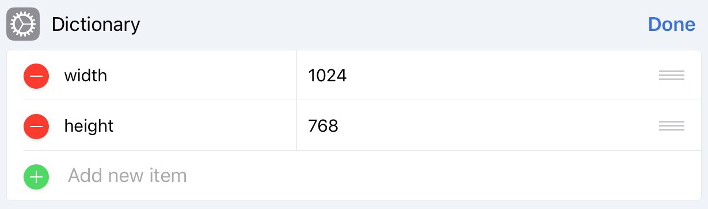Stage Size has some interesting traits. It can be negative (thanks MISSION_IMPOSSIBLE), and it also has a upwards limit where trail drawing stops working. Besides its quirks, stage size is actually really useful sometimes. If you want to make your game feel like it has more room or you just want to give it a different aspect ratio (width:height), stage size does that perfectly.
Editor Version
Table Showing Version Modifier
This is one of the two version traits you can modify. Once again, only change the value in the right side column of the table. Version 26 and up gives you the latest editor, 25 gives you the webplayer with the old editor, and 24 gives you old the editor mechanics (object variables and alphabetized variables, not the old UI), and projects are not played using the webplayer.
There are advantages of all three versions! Versions 26-30 (30 is the newest) have access to all of the newer blocks (such as destroy), custom rules, and self variables. Version 25 allows you to run secret blocks, but self variables and custom rules do not exist. Version 24 is the legacy project version, and it has many different traits about it. For example, objects do not lose quality when scaled up, deprecated blocks such as "move with trail" and "set opacity" work only in versions 24 and below, and text rendering is far superior to the current engine (no 40-line limit, all unicode works properly, higher quality). Unfortunately, projects with player version 24 run the webplayer when played in Safari, which means text renders as it does now and deprecated blocks will only work in the app.
Player Version
Player Version, ah yes. This is the cause of so many current bugs in Hopscotch because of how new it is. It's recommended that you keep projects up to date, which you can do with easily with this [optimize] feature in my shortcut. That is mainly due to the fact that the web browsers currently use only the latest version, causing inconsistent gameplay.
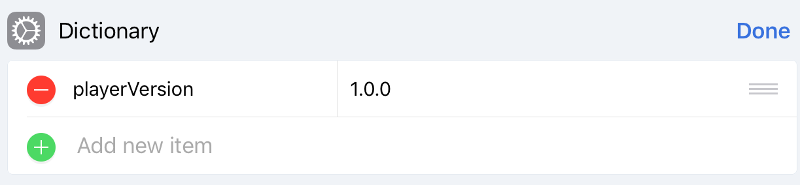Basically, each project has a specific version of the webplayer tied to it, and it uses the latest minor release of that version (1.0.0 uses 1.0.4, 1.1.0 uses 1.1.6, etc.). Newer webplayers usually have a major difference. For example, 1.2.0 and above makes it so variables no longer take a frame to execute. There are some bugs with it, but it is definitely something that everyone should get used to. The webplayer is versioned here so that existing projects do not break, but new projects will follow the new variable methods. If you are on version 1.0.x, update to 1.1.x. Otherwise, stay where you are.
Edited At Date
The Edited At Date won't really have an effect on your project. As you can probably tell, it changes the date the draft was edited on, which will also affect the order of your drafts. This trait is edited very easily, as you can type a date into several formats, and Shortcuts will also tell you the exact date and time that you are inputting (see the gray text). I haven't tested this yet, but with this method it may be possible to pin a draft that you are not using.
Base Object Scale
Finally, we have something that isn't the same when made on different devices. Base Object Scale is the scale factor used to determine the sizes of characters and only characters (shapes and text are not affected by this modification). Just like the other traits, change the value on the right and observe the effects. The iPhone generates a project with a default "BaseObjectScale" of 0.5, whilst the iPad's new project has a "BaseObjectScale" of 1.
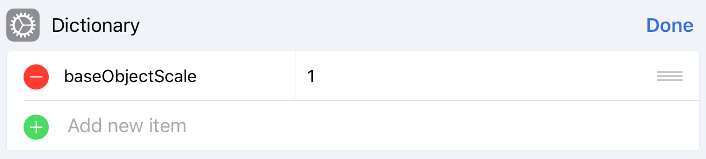There aren't that many use cases for this modification because you already have set size, but you may want to use it if you want the shape size to character size ratio to be different. Baseically, if you have a custom rule to initiate something 3D, but you want to use the same percent in set size for different-sized characters, you could use this to make sure that the characters always appear smaller. Not really an every-project thing, I know, but you might be able to find a use for it.
Font Size
This is useful because of Hopscotch's characters per line limit. Normally, each line has room for about 15 emojis in a 1024x768 editor, which ends up being about 600 pixels. In a smaller editor such as the 375x667 editor, text will max out at the width of the editor. When the font size is smaller, you can fit more characters onto one line. But ig it is bigger, text will lose less quality when upscaling (increasing the size of) it.
By changing this, you can make 16-bit emoji text-arts, something MagmaPOP always wished for. It's too bad that MagmaPOP wasn't here for my shortcut (and the removal of my game changer lol). You can also make larger labels that look nearly as clear as editor version 24's text, but at the cost of some line space.
Scenes
Most of us are familiar with the fact that Hopscotch has added an early version of a scenes editor for the beta channel. Given that it looks great and functions well, there are a few downsides and weaknesses to it. For example, you can't delete scenes once you create them. Also, you are unable to rearrange the scenes to rearrange the scenes to your liking. With my shortcut, you can add scenes to any editor (that does not mean that the normal editor gets the UI; they have to purely use modding in order to do anything with jumping between scenes), rename them, rearrange them, delete them, and transfer objects between them. In this first menu, you are asked to choose what you'd like to do with the scenes in your project.

Adding Scenes to the Project
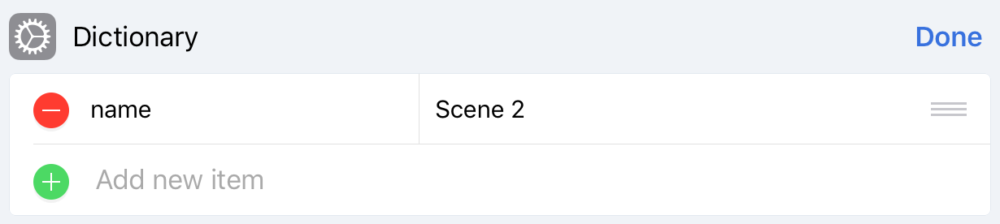
This is the first step in working with scenes – you need to have more than one scene to work with more than one scene. Before the beta scenes editor,
modding a normal project was the only way you could obtain more than one scene. If you are not a subscriber, this is still the only way to have more than
one in a project. If you are, you can use the UI and tap "New Scene" in the project. To add a scene using my shortcut, you'll need to select "Add a Scene"
when you are asked how you want to manage your project's scenes.
Next, the shortcut will prompt you to choose how many scenes you want to add.
Input a number, then name each scene by editing the right side the following dialog boxes (they should be "dictionaries" where you edit the value of "name").
After you have done that, congrats, you have successfully added scenes to your project
Rearranging Your Scenes
This one is a little menu-heavy, but easy to learn.
First, select how many times you would like to move a scene to the front/top. I suggest inputting the number of scenes that are in your project. This will
simplify things for the next step. If you did that, then just tap all of your scenes in reverse order as you get prompted. This should nicely rearrange your
scenes into your preferred order.
See the demo video below.
User selection menu asking which scene should be the first one
Deleting Scenes
- Objects not rearranged will be deleted after entering and exiting the project in Hopscotch.
- If all scenes are deleted, all objects will merge into one new scene created by Hopscotch, regardless of where they come from
Choosing Objects
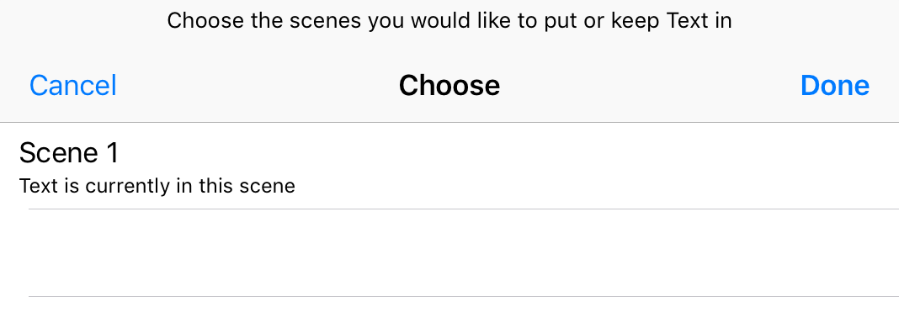
Obviously, each scene has its own set of objects. However, you may want to move an object from one scene to another, and that is not possible in Hopscotch (you can use custom rules and all that stuff, but that's too tedious). Using my shortcut, you can transfer multiple objects (you choose how many) between scenes. They will keep all of their traits, and their code will not be changed. After selecting the option "Choose Objects", choose the objects you'd like to move and choose the scene(s) they appear in. (If you choose more than one, the object's JSON code gets duplicated but the object does stay persistent between the two scenes).
Objects
Objects are a key component to any project in Hopscotch. They run the actions, hold certain properties, etc. However, some traits can be hard or impossible to adjust to your liking, and you can do just that with the shortcut. Choose your objects, and you will be greeted with a table. The left side tells you what trait it is, and the right side allows you to change those values. Just tap "Done" after each trait is good and you've successfully modified an object.
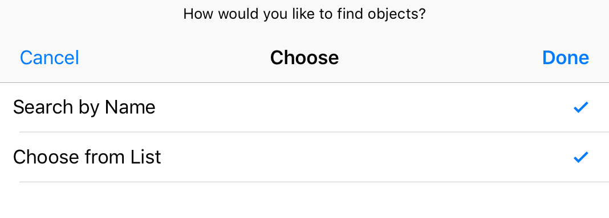
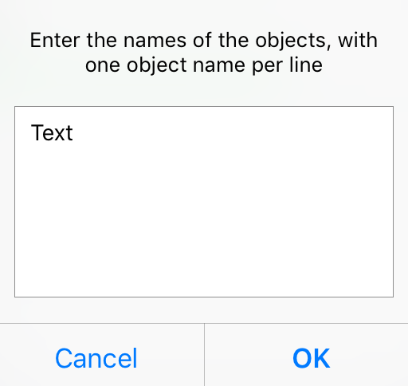
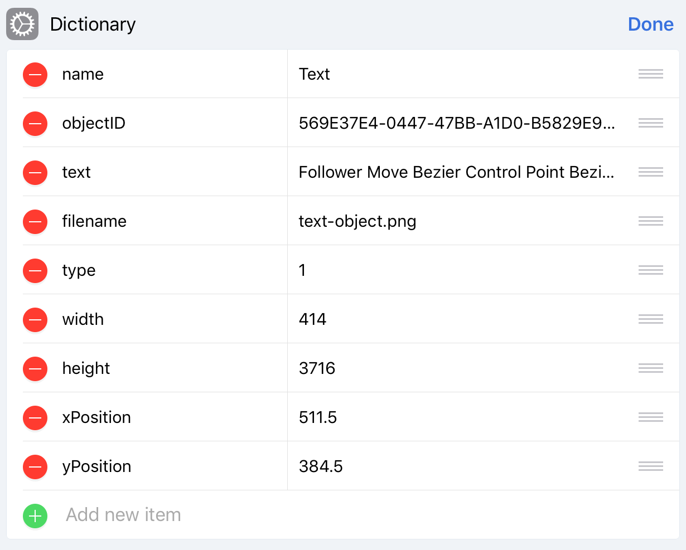
Variables
Variables keep track of most changing (and constant) numbers in your project. They are those yellow bubbles that you can choose a name for, but their options in the editor are very minimal. You can rename them, or leave them the way they are. However, the shortcut allows you to also change their type and delete them, although doing either of these will probably remove any trace of that variable in the project's code. This editor is old and is in chunk format, similar to abilities. You can either input raw JSON or keep the structure it is in. When you choose to modify variables, you get one popup with any and all variables. Hit done and those are your new variables.
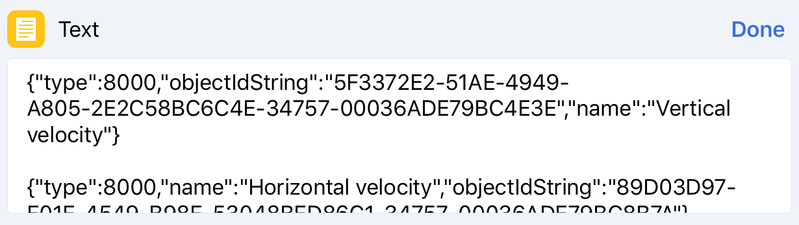Custom Rules
Custom rules are a great addition to Hopscotch, and they allow you to make a set of rules that you can apply to multiple objects. There really isn't much to say about them or change about them. Renaming and deleting them are easily done in the menu, so the only thing left to do is change the rules contained within them. This is actually surprisingly useful because you can do a true duplicate of the rule, meaning it will mirror any other instances of that same rule. To begin, choose to modify custom rules, then select all of the custom rules that you would like to change the rule sets of.
Next, you will be greeted with an input box showing the UUIDs of rules that are contained in each custom rule. Before going into this, you should preview the project and already have a pretty good idea of what exact rules you want to modify. Delete, move, add, or copy any rules that you wish, and tap ok. Bam you're done editing custom rules. Do this for every custom rule that you choose to modify. Also, note that custom rule UUIDs also appear as rules, as expected. You can use this to put the a custom rule inside of itself as well as to do other things that Hopscotch wasn't meant for. However, that does crash the game upon playing it.
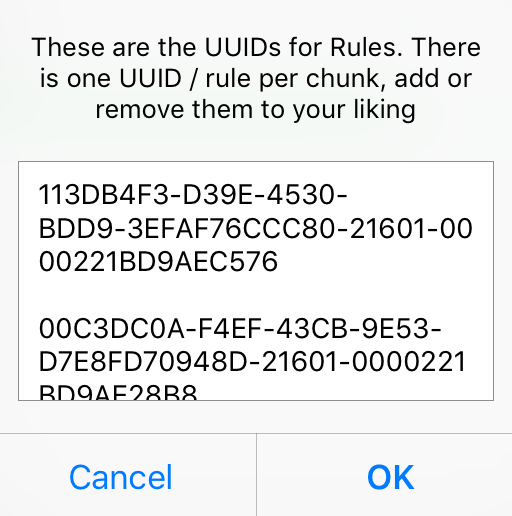Rules
Rules are those pink blocks inside every object that tell it “when” to do something. Each object's rules are considered blocks, and those describe the event that causes the actions inside to run. Examples include “When Game Starts”, “When iPad is tapped”, and “When equals”. These can be modded only to a limited extent, but having access to these blocks also provides information on their ability (the blocks inside that rule – you can use this UUID to edit that in the abilities part of the shortcut).
Upon selecting to modify rules in the shortcut, you will be asked how many sets of rules you would like to modify. The term “rule set” refers to the entire object or custom rule that you are referencing. For example, if you wanted to edit 3 rules under “Bounce” and 1 rule under the object “Chillanna”, you would need to modify 2 rule sets, one being the custom rule, “Bounce,” and the other one being the object, “Chillanna”. Basically, the “rule set” is the container of the rules, which is always going to be the custom rules or objects that you want to modify. After that, you will need to choose (for each rule set) whether it is an object or custom rule, and which object or custom rule you are looking for.
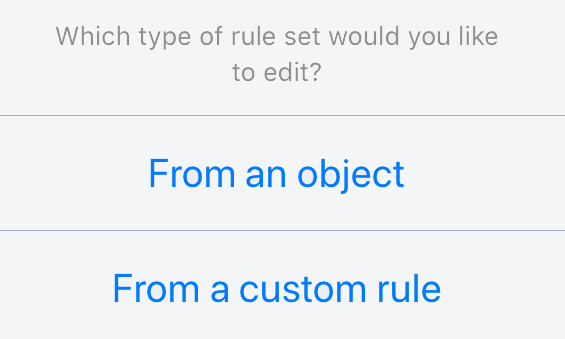After you have chosen your object or custom rule, you will need to choose which rules you'd like to view or edit inside of that. When choosing the rules, they will show up like the pink rule block does in Hopscotch, along with its UUID. In the images below, the rules listed include the name of the pink block (e.g. Game Starts, equals, etc.) as well as the UUID of the rule (this is what is used to identify it elsewhere). You can select multiple rules to modify, and for each one, another text box will pop up. This text box contains pure JSON code, meaning that any syntax errors may result in project corruption. From this point, you have information on the following pieces of information: the rule block type (the actual pink bubble that tells what type of rule it is), the ID (the same UUID is shown on the “choose rules” list), the ability ID (this is the UUID to the ability, which contains the code run inside the rule), and any other info on the rule block itself (conditional parameters, event parameters such as “self”, etc.).
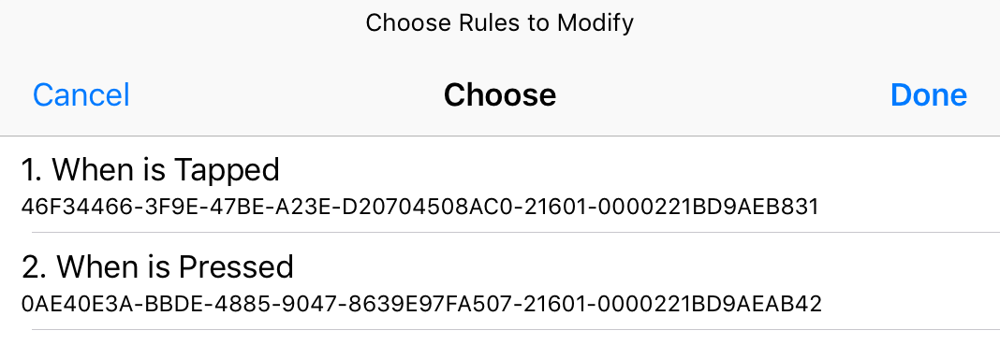
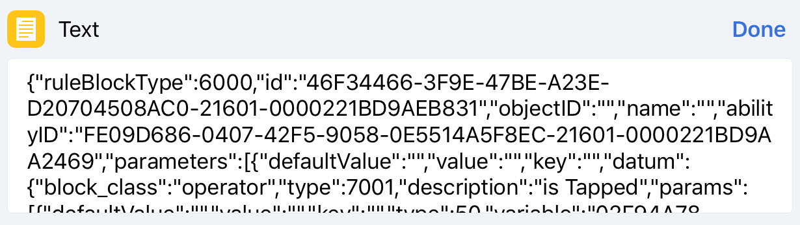
Abilities
This is where the real fun starts :)
Before we begin discussing each one, let's summarize what abilities are and the functions of each one so that you know which one you need to choose. Abilities are Hopscotch's way of storing every single block of code (whens/rules don't count) run by an object. Hopscotch stores each set of blocks under a collapsible within one “ability”, and these all have a UUID that they are identified by. My shortcut currently has 3 ways of modifying abilities (soon to be 4 with Create Dictionary Ability), and those are the ae_json_edit custom block, the MIDI hack, and find by UUID. The pre-named custom block is useful for quick access to code, the MIDI hack adds songs to your project, and find by UUID is how you modify bits of code that are pointed to by other abilities or rules. When choosing to modify abilities, choose the ones you need (can be more than one).
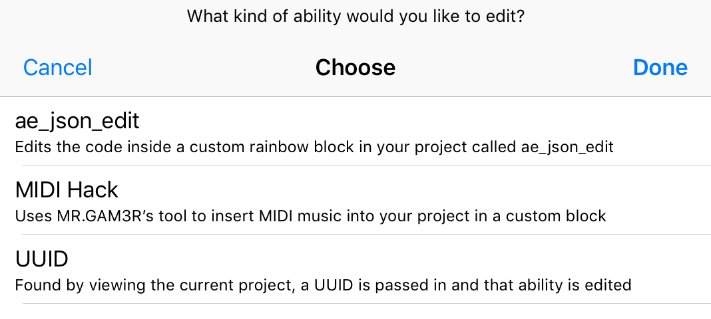The Prenamed Ability: “ae_json_edit”
This is one of the easiest concepts to understand when it comes to JSON editing, and it is where I recommend starting. The ae_json_edit ability is just an ordinary custom block/ability that you create in the project by tapping “New Block” (the shortcut can also create it if it does not exist). Selecting ae_json_edit when modifying abilities simply shows you the JSON code for that ability, in what I like to call “chunks”. Basically, a chunk is one cluster of the JSON code, representing one item in a list. You can use this format, or you can directly input a JSON list of blocks (without the brackets) you want to transfer. This option is great for transferring code from outside tools as well as getting started with the JSON structure of a Hopscotch block. The pre-named ability is also super useful when testing just a couple of blocks and how they react to different parameters, which is my main use for it.
When you select this ability, the existing code of the ability is shown if that ability exists and is not empty. Otherwise, it creates the ability (rainbow block), and defaults you to insert secret blocks. When editing this for the first time, pay attention to the “key-value pair” of JSON code (example – “description”: “move forward”). Since the keys are predetermined by Hopscotch, there is no point in modifying them. Instead, modify the values of them, such as the block's type, parameter values, etc. – stuff that you would notice a difference in when you reopen the project in Hopscotch. This is a simple but powerful tool, as it allows you to mess around with just a couple of bloks or paste in code from other generators such as Petrichor's pixel art tool. That choice is up to you. After you are done changing that code, tap done. You will also be given a screen to change other info about the ability if that's what you wish, but once you tap done on that, you have successfully edited the pre-named ability, ae_json_edit.
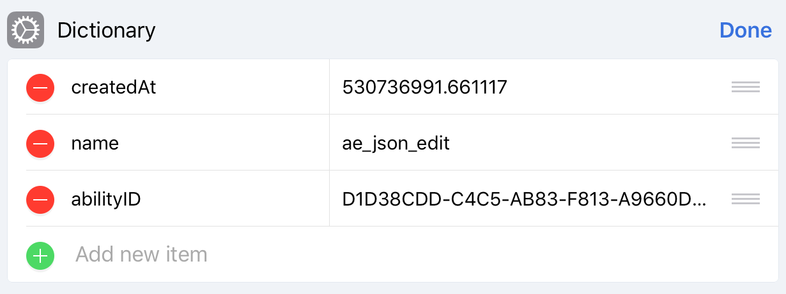The Hopscotch MIDI Hack
First, of all, credit goes where credit is due. The Hopscotch MIDI Hack was originally created by MR.GAM3R, and it can be found here.
BuildASnowman created a MIDI Hack outside of Hopscotch, and MR.GAM3R, inspired by it, created a similar tool in the form of a web page with some help from MIDIConvert (more info and how to use the web page can be found here).
Due to the fact that it is written in HTML and JavaScript, it is extremely easy to integrate into shortcuts, as shortcuts allows me to take variable data and get the contents of HTML code, which I modified very slightly.
Now, let's go into the very simple process of using it in my shortcut. When you get to the MIDI Hack, my shortcut will just prompt you to choose a MIDI file from your file browser (supported file extensions are .mid and .midi). Once you select
your MIDI file, the shortcut creates an ability with the same name as the MIDI file, and just like that the song is in your project. When using this, just remember that only the MIDI audio format is supported. MP3, M4A, WAV, and other common formats will not work.
Personally, I added this to my shortcut to experiment and give others the chance to use it for adding songs to projects. I would not rely on the consistency, accuracy, or performance of it, but it is a great tool for demonstrating the possibilities of modding Hopscotch.
Keep in mind that I did not make the MIDI Hack and I am not sure entirely how it works (besides reading the notes and converting it to JSON), so if you need help with that specifically, ask MR.GAM3R.
Find by UUID
Finding an ability by its UUID is the only way you can access every last bit of code in your project, and this is used for more advanced JSON editing. The main process of this goes through a process like this: think of the final ability, backtrack it to a rule, object, or custom rule, then locate its UUID by searching through the rules and other IDs. It's no easy feat and is extremely hard to do without a note-taking app of some sort opened in multitasking. This method of JSON editing is not for the faint of heart, as it is heavily based on text and short-term memory. But once you understand where to find the UUID of an ability you are looking for, this is the option that you use to modify the code inside of that. This is where you paste an ability ID from a rule, a control script ID from another block, etc. These are the blocks of code that are being pointed to by other abilities. If that was too much of a mouthful of word soup, I recommend gaining some more modding experience first. I am open for questions on the shortcut topic at any time.
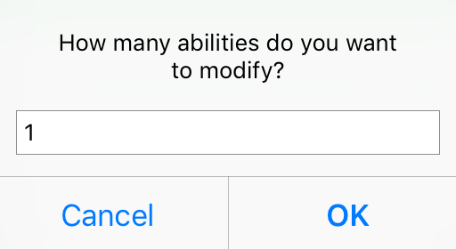Presets
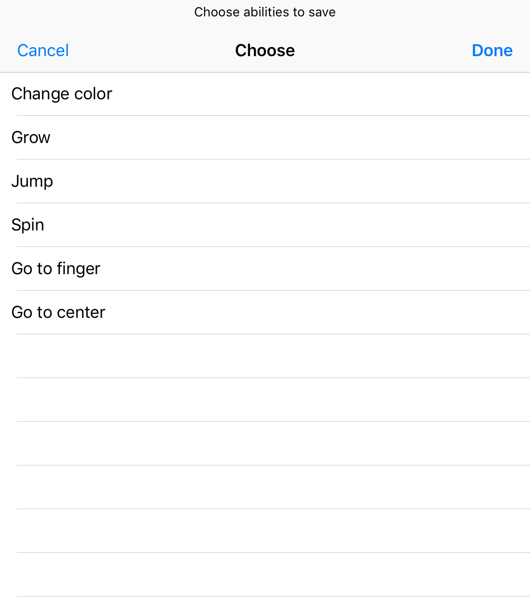
Presets are a way of copying code between projects, which can be super helpful in many situations, such as copying a template, adding custom block abilities (secret blocks and set image blocks, for example), and more!
Code being saved to a preset can include abilities and custom rules. To save and/or load a preset, select “Presets” when choosing traits to modify in your project, then select whether you want to save a preset, load a preset, or do both simultaneously.
Saving a preset requires selecting which abilities and custom rules to save, and that's it. A file is generated, and can be saved it to wherever you want! No work is required except for being patient, since the Shortcuts is extremely slow with matching ability IDs.
It also has a limit of 64 nested abilities since Shortcuts does not have a repeat until. You can edit this iteration count in the shortcut, but the shortcut will run a repeat action for the max iteration count every time. Reliability is not guaranteed on iOS 13.
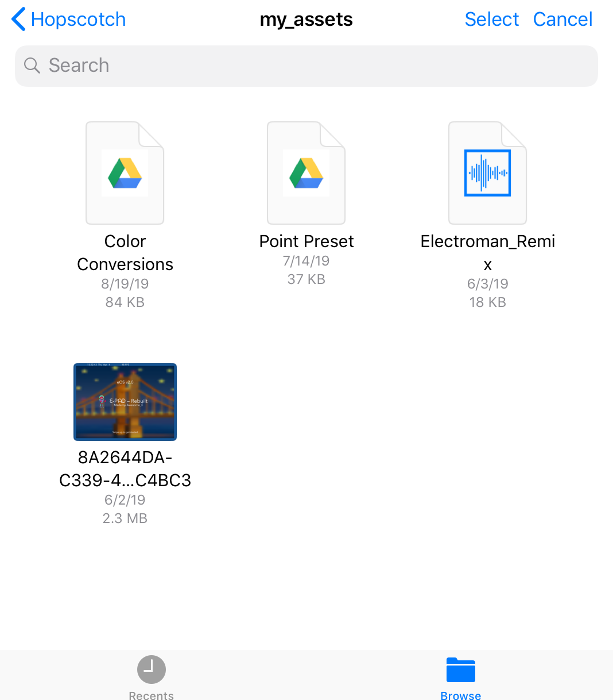
Loading a preset is even simpler than saving a preset. Choose load preset, and choose the file(s) that you want to load. The shortcut will merge the two projects automatically. Reliability on iOS 13 should be better with loading presets when compared to saving presets due to the lack of match text actions. However, both loading and saving presets are extremely slow and limited in functionality when compared to the Hopscotch Project Builder preset functionality.
Optimization
Optimization, simply but, makes a project better without any work needed. To perform any of these actions, select “Optimize” when choosing traits to modify, and select the action to perform. At this point in time, the
only useful optimization is Color Slot Optimization, since the purpose of the other two features is outdated. Color slot optimization, as stated, will turn all RGB and HSB operators into HSB values that take up significantly less storage in the project (over 90% reduction in file size).
There isn't much else about optimization. Unfortunately, I never got the time to add separate features to this main shortcut, such as the Ability Dictionary shortcut, but the color optimization works pretty well.
Change Logs
What Was in v0.1
- You can edit the stage size of a project. Choose the project, then choose to modify stage size.
- Scene editing. You could do one of the following:
- Add one scene to the project. The Shortcut will switch to that scene automatically.
- Set the Default Scene. This allows you to control which scene you are editing.
- Rename Scenes. This prompted you to enter a name for every scene.
- Delete Scenes. You are prompted to select one or more scenes to delete.
- You could modify the player version of a given project, allowing you to get the old editor (not interface).
- You could change the edited at date for the project.
- You could modify traits of an object such as position and type.
- You could also change the base object scale, which results in sizing characters.
- You were able to change the font size. Smaller font size meant more text on one line, but bigger text size meant less quality loss.
- Variables had their own form of editing. Select "variables" when asked what to modify, then you would get near-raw code for variables.
- You could edit a premade ability called ae_json_edit. This would allow you to mess with parameters and anything within a rainbow block.
Changes in Version 0.2
- You can now view the JSON file of a published project. To do this, open the share sheet, enter your age in the Hopscotch app, and find Run Shortcut (you may have to enable it). Then, find the Hopscotch JSON Shortcut and run that. The JSON file will automatically pop up.
- Updated the Shortcut to give you a readable dictionary so you can visualize the composition of the JSON file.
- Supplemental shortcut Generate UUID updated to not require internet
Changes in Version 0.3
- Allows the user to check for updates, meaning that they no longer have to be tagged and download the shortcut manually every time.
Changes in Version 0.4
- Say goodbye to the days of copy and paste! To insert secret blocks, simply type in {secret_blocks} in the place of one block.
- Secret Blocks are put into the ability by default if the ability is blank
- If you do not have an "ae_json_edit" ability, that will now be created for you.
Changes in Version 0.5
- Your Siri Shortcut will now update all by itself! There is no need to manually check for updates any more. No personal info, IP Address, or anything of that matter is tracked or collected. Every time you run the shortcut to edit a draft, it will check for updates on its own.
Changes in Version 0.6
Regex Video KONZ Video- Check internet will be faster, as I use a smaller image to do so.
- Regexes and KONZ are used to find abilities, drastically reducing time spent searching for the "ae_json_edit" ability.
- Previously, I searched every single ability and manually checked the name trait of that ability. Now, I use one expression to find the ability and it outputs exactly one match.
Changes in Version 1.0
Huge update coming your way! This version includes several new features and improves old features drastically.- You will no longer be prompted to save the project if no changes were made
- Modifying objects has been reworked. You can now edit multiple objects, either by name or selection. Finding the object has also been made much faster.
- New! Edit Custom Rules now by controlling what rules are in there. This can be useful if your custom rule keeps crashing and you want to take out the each rule one by one in a backup to then eliminate it in the original.
- New! Edit game rule parameters (you can also copy the abilityID and use that to edit the blocks inside that rule later).
- Revamp! Editing abilities can accept several different inputs now. I also fixed a sorting issue, so new abilities created will be in the front as they should be.
- ae_json_edit: The same as before, but it can now accept raw code. This means you can now paste in code from external JSON editors and the file will not be messed up. Does not apply to variables
- MIDI Hack: I integrated MR.GAM3R's Hopscotch MIDI Hack into my Shortcut so that you don't have to do extra file jumping. Just open a MIDI file when prompted, and the ability for your song is automatically created. I do not know how well it will work nor how to really modify the MIDI hack, so it's there because many of you might just want to try it, not necessarily because I would or would not recommend it.
- By UUID: This will allow you to edit any piece of code in your project, given that you know the UUID. There are several ways of getting the UUID, and I will have a separate tutorial for this.
- There is a new utility built into the project reader (when you activate it from the share sheet). If your project is in the filter, the shortcut will attempt to scan it in order to find a word in your project that might be causing it to get stuck. Curse words are not a part of this list I compiled, so if that isn't detected, chances are you knew it would be filtered and it should stay filtered.
Changes in Version 1.1
View Dictionary Free ePointsMake sure to get the view dictionary update as well as the shortcut itself. As per usual, enjoy the shortcut update!
- The rules popup now shows up one time and opens in Safari with pretty-print.
- ae_json_edit bug is now fixed. Sorry about that!
- Filter Regex updated with new words
- Set image blocks are now added in addition to secret blocks (every stage object)
- Dropped the base64 encoding on the filter regex for better accessibility (you will not be affected)
- Filter detection on drafts has been added
- New View Dictionary Shortcut to open Safari popups. The main shortcut will automatically decide when to open the popup. The Safari popup is used because you can use "find in page" on the popup, but it loads slower.
- Removed update template for formatting, which allows me to write raw code for the next changelog
- The shortcut will now detect invalid inputs
Changes in Version 1.2
Generate UUID ePoints InfoGet the View Dictionary Update if you have not updated it since v1.1 (if you got that when downloading v1.1 of my JSON shortcut, you are good). Also, make sure to grab the UUID update, as I fixed a small issue there that would cause presets to not work. As per usual, enjoy the shortcut update! ePoints Info has a secret message, and it is not a rick roll (or is it). This monster of a shortcut now has 958 actions in it!
- Editing Scenes got an overhaul. You can now select multiple actions, add more than one scene at a time, and set a default or first scene multiple times.
- Once again, the filter regex has been updated with new words
- You can use {uuid} to generate a random UUID for your project. This is useful for several things, such as making several hidden abilities by copying one (because you need an abilityID).
- You can now select Custom Rules when modifying rules so you don't have to remember the name anymore.
- Presets presets presets! You care now able to save and load code from abilities and custom rules. Choose "presets" when asked what you want to modify. You can save and load presets in any project.
- To save a preset, choose save on the popup menu, then choose the abilities and custom rules you would like to save. Then wait, and save your preset anywhere you'd like.
- To load a preset, simply choose the .hspre (Hopscotch Preset) file from wherever you saved it. Everything will automatically be added to your new project.
- Now, obviously, there are some limitations at the moment. Up to 64 nested conditionals, control scripts, etc. are supported. These include blocks inside repeats, if statements, and draw a trail blocks. It should be plenty but it is nonetheless a limitation due to the lack of proper for loops in the Shortcuts app.
- The other limitation is variables. Variables unfortunately cannot be saved at the moment. This will hopefully come with a newer update to the shortcut. But, there is an exception. Since the three default variables (velocities and bounce height) come with every project, these variables will be saved, renamed or not.
- What gets adopted: Abilities inside abilities and abilities within custom rules will be saved. However, custom rules inside custom rules will not be saved.
- An updated UUID Shortcut is highly recommended. The old one has an issue that incorrectly formatted the UUID, which could lead to presets failing to save bits of code.
- Your project file will be validated upon opening and saving the file. A blank project will inform you that you tried to edit a blank draft, and if you messed up the formatting of an edit, the shortcut will prevent you from saving your file. In the past, a mistake like this would cause your project to lose all of its code. But, this does not mean that it is immune to everything. For example, corrupted variables and blocks will vanish, but other variable and blocks in abilities will remain. Always be careful with formatting.
- A few descriptions have been tweaked, and there is an easter egg.
- Be careful iOS 11 users. If you notice that "world" will randomly appear in the project file, you have run into a backwards-compatability issue. Go through the shortcut and if and replace text replaces the text with "world", change it so that it replaces the text with nothing. I think there are a couple of instances where this may affect your project, and I may address in a future update.
Changes in Version 1.3
Minor Update
- Added Player Version to traits you can modify. This means that you can now change which version of the webplayer you use for the project. Tag me for more info.
- iOS 11 users, sorry to keep you waiting (I'm probably the only one anyways). If projects were going corrupt or other unwanted things were happening, it was probably because of the way Replace Text imports. Instead of replacing a phrase with a blank string, it replaces the string with "world". I moved the blank text so that it will work as intended.
Changes in Version 1.3.1
Bug Fix, thanks @M_W_K
- Fixed an issue where 4 byte projects were not detected as empty, even though they are the same as the 2 byte project but with 2 line breaks in between.
- Empty projects will now be deleted automatically when passed in so that you do not have to worry about them later
- Fixed an issue where a text object would change its text to its name after editing it
Changes in Version 1.4
Back to the Big Changelogs
- There are a few more ways to send an input into the shortcut. Of the input methods, 2 out of the 3 are new, and they allow you to import a project.
- The existing method at the moment allows you to input a project URL, and the project's code will be shown.
- Any URL that is not a project link will be checked to see if it is a JSON file. If it is, the link will be converted into a project, and it will import the project and create a draft. Useful for saving a draft of an
unplayable project.
- Supported URL types: Data, http, https. Examples: Petrichor's Pixel Art Tool, project JSON links such as this one.
- Any Text, json, or hopscotch file will be imported as a draft, similar to urls.
- Show Preview has an extra option: Skip Preview
- Order of Operations has changed, and the choose traits no longer uses match text. It now uses a normal list, which means the order will stay consistent in the choose menu.
- Editing Scenes has gotten an overhaul. There are changes to every aspect of editng the scene (except deleting).
- When adding a scene, the default scene name will include a number corresponding to its index.
- Duplicate Scene Names are not allowed. This is to keep the shortcut from messing up later. Any duplicate name made while creating scenes is changed to a random string corresponding to the object created inside of it.
- The new object created inside of the scene now uses an alphanumeric unique identifier instead of a UUID (universally unique identifier) for its name, meaning it will be shorter but still has an exceedingly high nmber of combinations.
- The new object created when making a scene is now placed in the center of the project instead of always being at 512, 384. Sorry iPhone users for that one.
- When reordering scenes, you will have a better prompt. The old one was a little bit confusing, not to say the new one is that much better either.
- The shortcut will limit you in the number of times you can reorder a scene. This is to compensate for typos and extra-long sessions of tapping.
- The set default scene loop will also show the repeat index now.
- Trying to use a duplicate name while renaming scenes will result in an error message, reverting the scene's name.
- You are now able to move objects between scenes. You can even select multiple scenes per object. However, selecting multiple scenes for one object results in that object being duplicated in the code. However, this does not affect the performace of the project or usage of the shortcut in any major way. (The shortcut will read the extra objects but have no action otherwise)
- Finally off the topic of scenes, phew. When editing objects, duplicate object entries (where from you say) will be removed after objects are selected.
- You are now able to change the UUID of an object. I have no idea why you would want to do this, but do note that you are still responsible for your code.
- If no rules are present after selecting an object or custom rule, you will be alerted before moving on. This also means the popup saying "you are about to edit this rule, keep the formatting" will not appear when you don't have any rules to modify.
- You can now use \END\ as a uuid to break out of the editing UUID loop. This is for the situation where you have a lot more UUIDs entered compared to what you meant.
- Due to the new Hopscotch update, blank control scripts would not be recognized, as they don't have their own ability. So, of course I'm gonna fix that! When entering an ability ID, it will check if the ability exists or is referenced (a control script points to it). However, blank rules will still remain untouchable due to how the shortcut works.
- Recognition of UUIDs is slightly more lenient now. It will accept some margin of error for instances such as @GameCodingCrazy123's one-digit-too-long UUID.
- Automatic Project Optimization is finally starting! At the moment, only color operators will be automatically simplified when given a constant. Any HSB or RGB color operator inside of a color slot will be converted into just a value, saving over 50% in file space required to display the color. Color operators with variables and other forms of data such as math blocks will not be changed.
- Sounds
Changes in Version 1.4.1
Stand-AloneBug Fix we Shall
- Now uses a stand-alone shortcut to run from the share sheet because the main shortcut literally got too big. Download the separate shortcut from the link above, and run the blue "Run HS JSON" shortcut from the share sheet from now on.
- If I'm not mistaken, all error points should be fixed and the Shortcut should be able to run on iOS 13. Big thanks to @TheCMStudios for helping me test that out
- Allows Variables to Use Raw JSON Code now. Tip: If you want to use a JSON editor to read this, just find a replace text site or program that can replace two line breaks with a comma. (\n\n = ,)
- New Variable Editing Disclaimer
- Fixed a bug with Edited At which used to add the player version trait to the edited at date
- New Select Traits to Modify Menu, featuring the concept of icons shown on the Shortcut Topic. More of this design will be featured in 2.0, where the shortcut has different modes of running.
- More Error Sounds for mid-shortcut popups
- Minor Code Reorganizing
Changes in Version 1.5
ok fine here is an update
- Added a word to the filter list after the longest time
- Objects will now update when their UUID is changed
- You can now edit traits of an ability, such as the name, date of creation, etc.
- Variables will now transfer in presets. However, try to avoid duplicate imports, as duplicate variables will not be removed yet. I will work on that in the future.
- Color Optimization has been adjusted so that your new colors will not be affected by Hopscotch's conversion error
- Your player version can automatically update now. Do note that many complex projects will break through this process though, as there is a timing bug at this moment in time.
- You can now choose to fill blank conditionals, as older player versions still have the blank conditional freeze issue.
- Secret Blocks got some label changing for destroy to adjust to the new update.
Changes in Version 1.6
Should have really done this earlier. Even though you had a Shortcut disclaimer and my warnings, huge apologies to everyone on iOS 13 losing drafts.
- Auto-updating resources! Some features have existed previously, and some are new! These resources will update every time you are online, and saving them into a json file stored in your iCloud Shortcuts folder (which you can access offline if it was synced). Most of the data is pulled from my GitHub Pages, and if that is blocked, no worries; there's a backup that allows you to take new data straight from the old secret post. My shortcut can detect if my page is blocked. However, the forum's whole thing about editing means that the backup source is less reliable, though I will try and keep it updated.
- Secret Blocks will automatically update as they are discovered. There is no need to manually push a shortcut update for these, as they take data straight from a live project draft. The same applies for set image blocks.
- Shortcut status will also be retrieved automatically. This will alert you when a major bug or something of that matter is discovered with the shortcut. You will also be able to see the issue tracker on post 2 of the shortcut topic for this, but if it skips your mind and you run the shortcut, there will be a warning or error, depending on how severe the issue is.
- The filter regex will also be updated on its own! No longer will I need to worry about updating the Shortcut itself to keep its filter regex up to date. Plus, the it was out of date. That is no longer a problem.
- Checking for updates has also seen a change in format. This will have little to no effect to you, the user, unless you are far enough into the future (then this will be 1 of 2 updates). Updates have also been moved to Github, like the shortcut status. If it is blocked for you, my shortcut will instead retrieve it from the reference post, so no worries there. In the future, things may change. If I update to iOS 13 and push updates, older versions will not be brought to an incompatible update.
- Usability/Interface improvement. On an iPhone, menu descriptions will no longer be cut off. iPhones now have shortened descriptions when compared to iPad.
- MAJOR Bug Fix: iOS 13 users should be able to export their projects safely again. However, this is not guarenteed to work perfectly, so still exercise caution when using the shortcut.
- Objects now support the resize scale modifier, which essentially is the pinch size in the editor. The default scale is 1.
- Presets have had some reworkings in exporting, importing, and file support.
- Presets should once again be able to export normally, no more nonsense from required variable errors.
- Another minor preset bug. Could have been a 0.00001% chance, but Siri Shortcuts had a base64 decode bug (where literally all other decoders worked just fine), and the preset project would randomly cut off at an equals sign in the project. Exports have been tweaked ever so slightly to ensure that this does not happen.
- Presets support zip archives with the extension hsprez (hspre but with a z for zip). You can now compress several presets into one of these and import these into projects like any other presets. Although not supported within the shortcut, you can make a new shortcut that allows selects presets and creates a zip archive from these, with the extension hsprez (the .zip extension will be rejected). However, you still have the ability to import multiple presets at a time, so the preset archive supports are more so for potential downloads in the future that invlove multiple preset files.
Changes in Version 1.6.1
Important bug fix. Sorry for the wait (@MISSION_IMPOSSIBLE)
- Secret Blocks and Image blocks should work once again
- Error Message Support expanded; maybe that will come into effect later.
- Fixed the GitHub update channel; you should be able to receive updated info from there now, though it won't really make a difference unless editing changes again on the forum.
- Upon importing the shortcut, you will be asked to confirm whether you are signed into iCloud for file saving (keeps info up to date when offline). If not, your shortcut will default to included info when offline.
What's New in Version 1.6.2
This is an iOS 13 exclusive release to fix shortcut bugs specific to this version of iOS and can only be manually downloaded as of now.
- Changing the editor version should invoke the popup once again.
- Changing the player version should show the popup once again.
- Changing the rules in the project should now allow you to choose rule sets once again.
- Changing the custom rules in the project should also show the popup once again.
- The user will be asked to check for filtered words since large projects now fail due to the match action timing out.